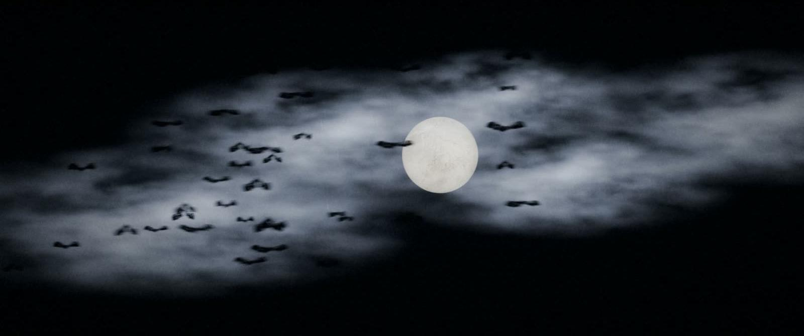
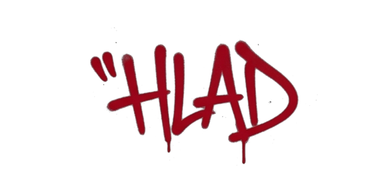
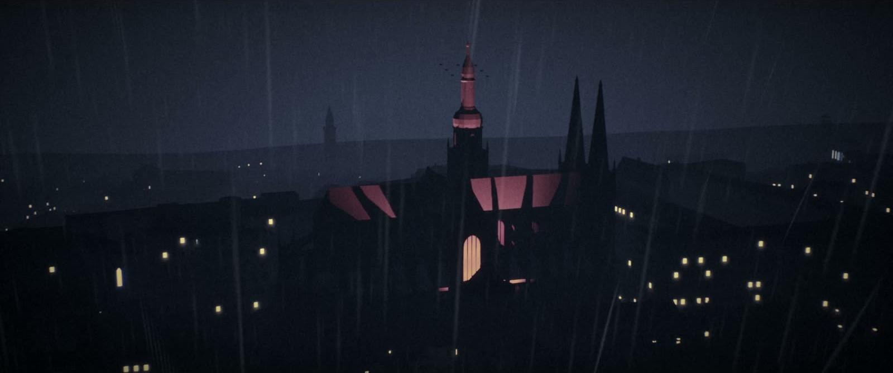
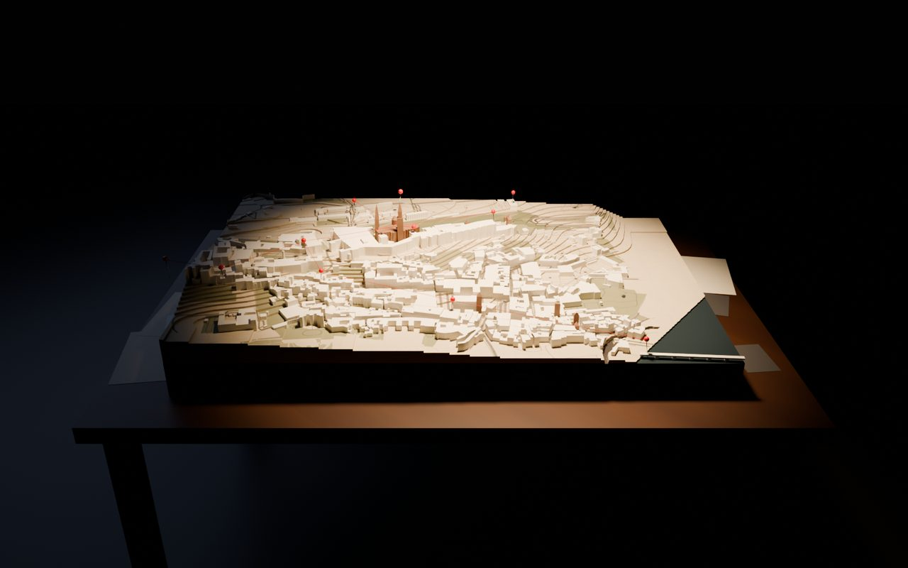
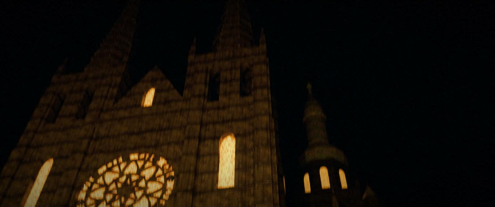
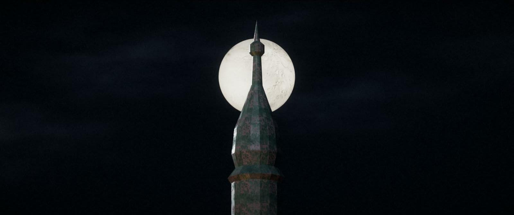
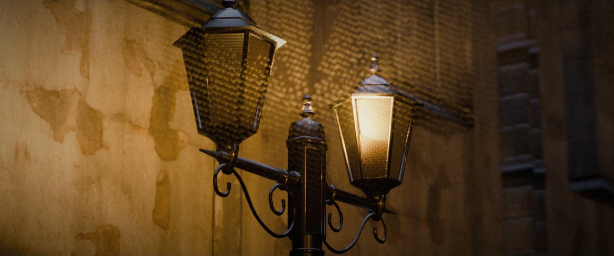
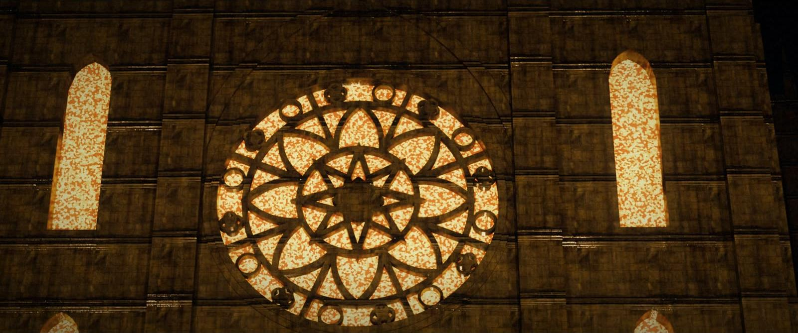
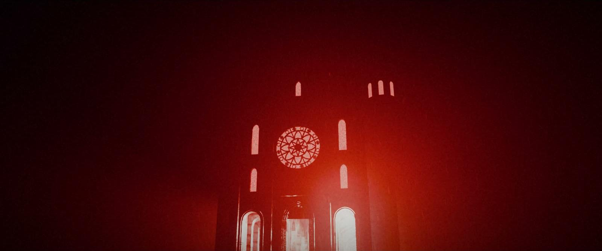

Um jogo do universo ERDOP
Battle royale de vampiros numa Praga que nunca amanhece.
Em desenvolvimento · fase alfa · PC · solo, duo e trio

02 · A ideia do vampiro
Você é um deles
A Cria da Aurora
CastigoA caçada
ExceçãoPresa livre
A campanha
Quatro atos, uma noite
Fim de · O jogo
Entrar na lista de espera03 · Sentidos aguçados · tecla X
Ressonância de sangue

04 · As armas
Ferro para marcar
em definição · ainda não está no jogo
Customizar a arma
Customizar a arma
Todos os números da arma
05 · Os clãs
Oito sob a nave
Toque num rosto.
Em jogo · forma humana e forma bestial
Como se joga · o inimigo
A Inquisição
Humanos, não vampiros. Na tela aparecem como ENTIDADES DE DEFESA: a tropa que a cidade solta atrás de quem caça à noite.
O arsenal da tropa
Fim de · Como se joga
Entrar na lista de espera
06 · A cidade
Praga, pedra por pedra
O mapa não foi inventado. Foi medido: ruas do traçado real, relevo da colina, torres na altura dos documentos.

06 · A cidade
Praga, pedra por pedra
O mapa não foi inventado. Foi medido: ruas do traçado real, relevo da colina, torres na altura dos documentos.
Sala de operações
Praga em cima da mesa
Debaixo da mesa
O que há no subsolo
No jogo
Na Praga real




Fim de · O mundo
Entrar na lista de espera07 · A loja
No jogo. E na sua porta.
Só se compra em jogoNenhum preço em dinheiro: o preço é em moedas do jogo.
08 · O passe de batalha
degraus
09 · Patente e ranking
A disputa mundial
Patente: do nível 1 até ANCIÃO
Top 5 mundial simulação
Fim de · Progressão e economia
Entrar na lista de espera● no ar
toque no alto-falante ou arraste a barra para ouvir
10 · A banda
ERDOP no rádio
Fim de · A trilha
Entrar na lista de esperaFim de · Bastidores
Entrar na lista de espera
12 · Lista de espera
Ninguém caça sozinho
Seja avisado quando a caçada abrir.
Clique para romper o lacre